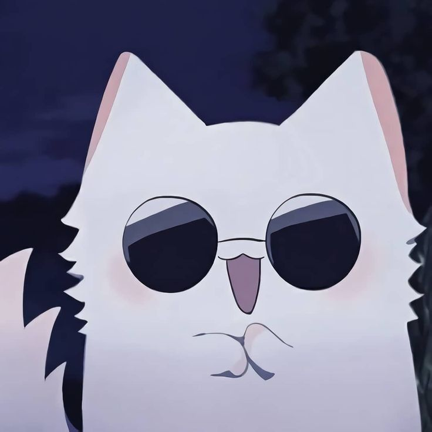
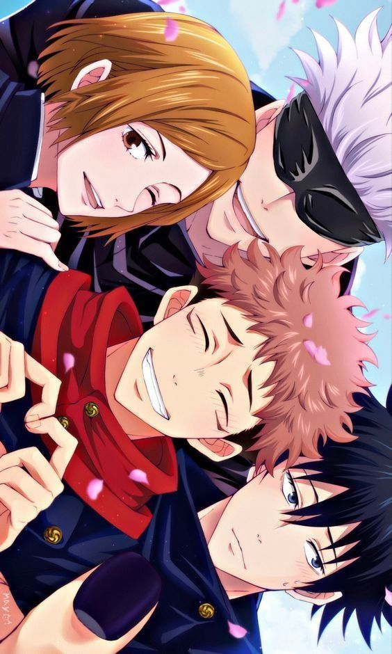
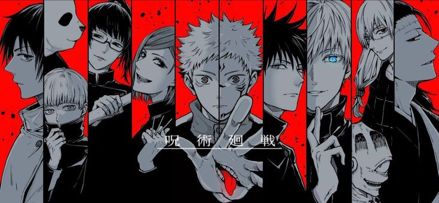
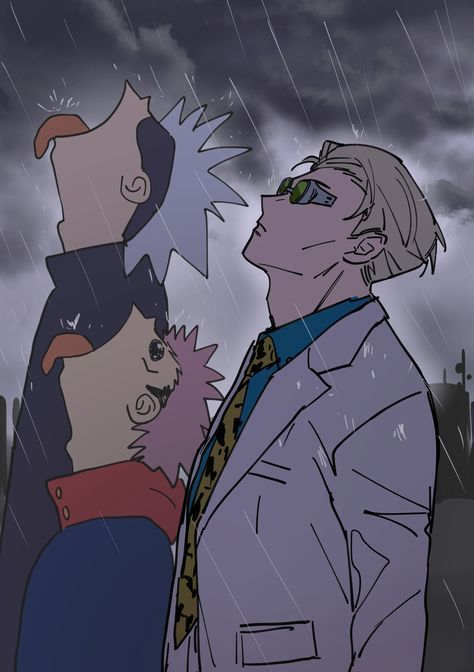
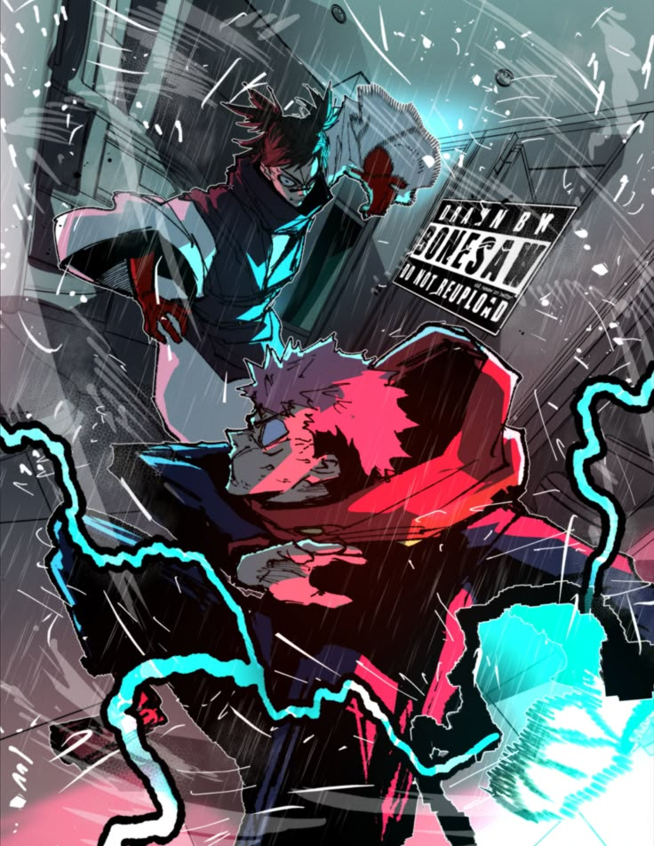
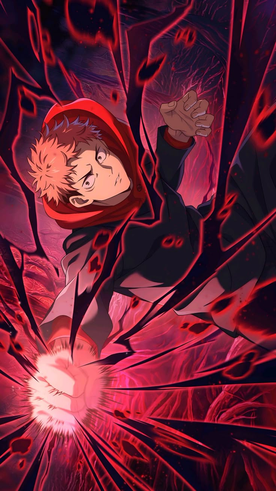

🧩 Resumen general
Jujutsu Kaisen es una historia de acción y fantasía oscura que sigue a Yuji Itadori, quien accidentalmente entra al mundo de las maldiciones: criaturas nacidas de las emociones negativas de la humanidad.
📘 ¿Cómo empieza todo?
Yuji encuentra un dedo maldito perteneciente a Sukuna. Para salvar a sus amigos, se lo come, reviviendo al Rey de las Maldiciones dentro de él.
🧙♂️ El mundo de los hechiceros
- Exorcizar maldiciones
- Controlar la energía maldita
- Proteger la vida humana
Gojo Satoru recluta a Yuji para entrenar en la Escuela de Hechicería de Tokio junto a Megumi y Nobara.
😈 La amenaza principal
Las maldiciones aumentan su fuerza y humanos traicionan a la humanidad para liberar a Sukuna por completo.
📸 Galería





